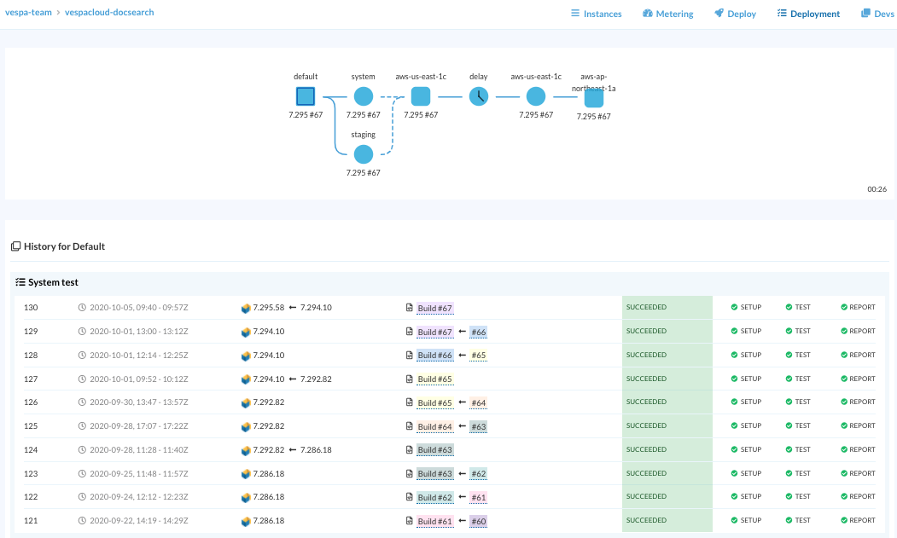

Vespa Cloud automates deployment using deployment.xml - track and manage deployments in the console: 
<deployment version="1.0">
<prod>
<region active="true">aws-us-east-1c</region>
<delay minutes="10" />
<test>aws-us-east-1c</test>
<region active="true">aws-ap-northeast-1a</region>
</prod>
</deployment>
This example deploys to two production zones - notes:
Follow steps in Getting to Production, or the full example in album-recommendation-searcher. Also see the API reference. Summary:
Configure where to deploy - supported zones.
Create at least one system and one staging test - production tests are optional.
Configure a job in a tool like Github Actions - see Continuous Deployment below.
Set up a job which builds the Vespa application and submits it to the Vespa cloud. See the sample GitHub workflow.
The job should execute something like the following (modify as needed if not using git):
$ mvn clean vespa:compileVersion \
-DapiKey="${MY_API_KEY}"
$ mvn package vespa:submit \
-Dvespa.compile.version="$(cat target/vespa.compile.version)" \
-DsourceUrl=$(git config --get remote.origin.url) \
-DauthorEmail=$(git log -1 --format=%aE) \
-DapiKey="${MY_API_KEY}"
Track deployment at
https://console.vespa.oath.cloud/tenant/mytenant/application/myapp/deployment -
click "Deployment" in the console / refresh page.
Pro Tip: The sourceUrl is displayed in the console -
this can point to PR or diff or commit, whatever that is useful to trackthe change
Deployment jobs use the Application API key. The API key can stored as a secret in the repository, see the sample above.
Some services like Travis CI do not accept multi-line values for Environment Variables in Settings. A workaround is to use the output of
$ openssl base64 -A -a < mykey.pem && echoin a variable, say VESPA_MYAPP_API_KEY, in Travis Settings. VESPA_MYAPP_API_KEY is exported in the Travis environment, example output:
Setting environment variables from repository settings $ export VESPA_MYAPP_API_KEY=[secure]Then, before deploying/submitting to Vespa Cloud, regenerate the key value:
MY_API_KEY=`echo $VESPA_MYAPP_API_KEY | openssl base64 -A -a -d`and use "${MY_API_KEY}" in the deploy/submit command.
Vespa Cloud is backwards compatible on major versions. Meaning, code compiled with an older version of Vespa APIs can always be deployed to Vespa Cloud on same major version. However, if the application package is compiled with a newer API version, then deployed to an older version serving, deployment can fail.
This is normally not a problem as Vespa Cloud upgrades daily.
To make sure forward compatibility is not an issue,
vespa:compileVersion returns the lowest
version running in production for the application.
This version is then set in vespa.compile.version when building the application package.
Vespa applications are compiled against one version of the Vespa Java artifacts, and then deployed to nodes in the cloud where the runtime Vespa version is controlled by the system. This runtime, or platform, version is also continuously updated, independently of application updates. This leads to a number of possible combinations of application packages and platform versions for each application.
Instead of a simple pipeline, Vespa deployments are orchestrated such that any deployment of an application package
X to a production cluster with platform version Y is preceded by system and staging
tests using the same version pair; and likewise for any upgrade of the platform to version Y of a production
cluster running an application package X.
Good system and staging tests therefore guard against both unfortunate changes in the application, and in the Vespa platform.
System and staging tests are mandatory.
When an application or platform change has been successfully verified in a system and staging tests, it is deployed to a production zone. This deployment job may also contain verification tests that need to succeed before the change rolls on to more zones. Good production tests fail if a change is deployed in production which impacts the observed behavior of the application negatively, typically by asserting on application metrics after a delay. If the application is deployed in multiple prod zones, this makes it possible to revert to the old version quickly by shifting traffic to another production zone.
Status of ongoing tests and deployments is found by clicking Deployment in the application view in the console. Examples of advanced deployment configuration which can be set in deployment.xml include:
Production jobs run sequentially by default, but can be configured to run in parallel. Inside each zone, Vespa itself orchestrates the deployment, such that the application may continue to serve, even as subsets of its nodes are down for upgrade. A production deployment job is not complete before the upgrade is completed on all nodes, and all nodes report correct config generation.
When the Vespa platform is upgraded, each node has to restart with the new runtime; this is typically slower than an application change by the user, which often amounts only to a reconfiguration of smaller parts of the deployment.
To delete an application, remove all production instances first.
WARNING! Following this guide will remove production instances and all data within them. The data is unrecoverable.
<deployment version="1.0" />
<validation-overrides>
<allow until="2020-09-30" comment="Removing aws-us-east-1c">deployment-removal</allow>
</validation-overrides>
With CD, it is not possible to hold off releasing a feature until it is done, test it manually until convinced it works and then release it to production. What to do instead? The answer is feature switches: release new features to production as they are developed, but include logic which keeps them deactivated until they are ready, or until they have been verified in production with a subset of users.
Bucket tests is the practice of systematically testing new features or behavior for a controlled subset of users. This is common practice when releasing new science models, as they are difficult to verify in test, but can also be used for other features.
To test new behavior in Vespa, use a combination of search chains and rank profiles, controlled by query profiles, where one query profiles correspond to one bucket. These features support inheritance to make it easy to express variation without repetition.
Some times a new feature require incompatible changes to a data field. To be able to CD such changes, it is necessary to create a new field containing the new version of the data. This costs extra resources but less than the alternative: standing up a new system copy with the new data. New fields can be added and populated while the system is live.
It should be mentioned that the need for incompatible changes can be decreased by making the semantics of the fields more precise. E.g., if a field is defined as the "quality" of a document, where a higher number means higher quality, a new algorithm which produces a different range and distribution will typically be an incompatible change. However, if the field is defined more precisely as the average time spent on the document once it is clicked, then a new algorithm which produces better estimates of this value will not be an incompatible change. Using precise semantics also have the advantage of making it easier to understand if the use of the data and its statistical properties are reasonable.Another challenge with CD is integration testing across multiple services: another service depends on this Vespa application for its own integration testing. There are two ways to provide this: Either create an additional application instance for testing or use test data in the production instance. Using test data in production requires that some thought is given to separating this data from the real data in queries. A separate instance gives complete isolation, but with some additional overhead, and may not produce quite as realistic testing of queries, as those will run only over the test data in the separate instance.
Each application package build which is submitted to Vespa Cloud constitutes an application change which must be tested and, if found healthy, deployed. Similarly, each change to the Vespa platform, by the Vespa team, must be tested and deployed for all the hosted applications. Vespa Cloud automates all these tests and deployments, with features including: